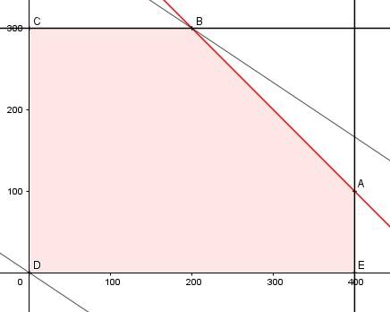

Aufgabe 86 Eine Firma kann 400 Dickdrahtrollen und 300 Dünndrahtrollen pro Tag herstellen. Sie liefert täglich 500 Rollen aus. Pro Dickdrahtrolle verdient sie 10 €, pro Dünndrahtrolle 15 €. Wieviel Rollen Dick- bzw. Dünndraht muss sie pro Tag verkaufen, um einen möglichst großen Gewinn G zu erzielen? x = Dickdrahtrolle y = Dünndrahtrolle Bedingungen: x + y ≤ 500 x ≤ 400 y ≤ 300 x ≥ 0 x ∈ ℕ y ≥ 0 y ∈ ℕ Zielfunktion: G = 10x + 15y Randgerade 1: y = 300 Randgerade 2: x + y = 500 Randgerade 3: x = 400

Die Eckpunkte A, B, C, D und E bilden das Planungsgebiet, das alle Ungleichungen erfüllt. Eckpunkt A ist der Schnittpunkt der Randgeraden 2 und 3 400 + y = 500 |-400 y = 100 A(400|100) Eckpunkt B ist der Schnittpunkt der Randgeraden 1 und 3 x + 300 = 500 |-300 x = 200 B(200|300) Die Parallele der Zielfunktion G liegt in B am höchsten --> Wenn 200 Rollen Dickdraht und 300 Rollen Dünndraht verkauft werden, ist der Gewinn am größten und beträgt Gmax = 10 * 200 + 15 * 300 = 6 500 €